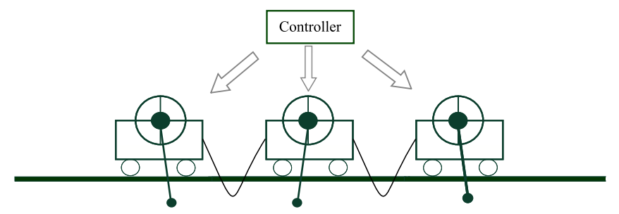

Our Evolutionary Algorithms Research
Our research on evolutionary algorithms explores computational frameworks that are inspired by biological models such as artificial gene regulatory networks (AGRNs). Epigenetic networks are based on AGRNs and share several advantages of models such as neural networks by allow for transparent execution and interpretable outputs.
Epigenetic Networks

The philosophy behind epigenetic networks is that rather than using a whole network to make complex decisions, there are significant advantages to allowing the network itself to chose its structure dynamically, facilitating specialised subsections of itself to be applied to specific sub-tasks within the overall task. This allows for the network to create task dependent topologies which can be autonomously switched between, according to the dynamics of the task.
Decomposability and Transparency
The main advantage of this is that epigenetic networks can decompose complex tasks whilst solving them. By analysing the toplogies of the network which are significantly smaller than the overall networks (typically consisting of 2-5 nodes - see figure on top right) the functionality of that topology is mathematically tractable and frequently maps to a specific behaviour within the network. By analysing all toplogies created by the network it is possible to gain an understating of its functionality effectively making its decision making process transparent, and allowing for increased confidence in the model predictions.
Alex Turner's EPSRC First Grant applies epigenetic networks to increasing the transparency of
computational models in a case study on modelling human visceral leismaniasis in collaboration with SimOmics.
Time-series Data
Another advantage of autonomous topological modification is that is that it often results in better functionality in terms of objective performance when compared to their their static counterparts, especially when applied to high frequency time series data.